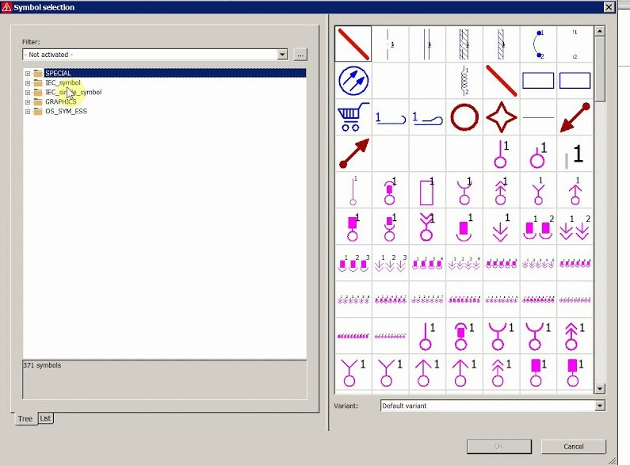
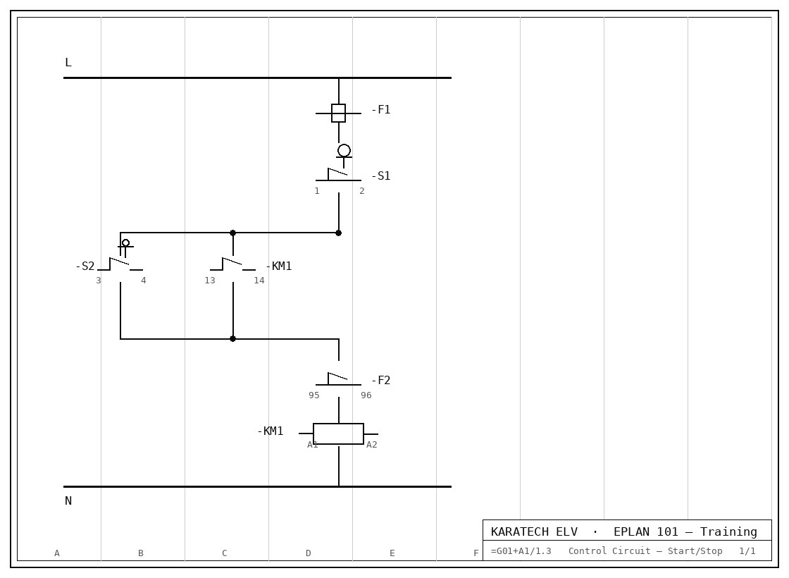

Control Circuit Design — Symbols & Devices
Part 3 of 10 — from graphic symbols to the first real control circuit: the motor start-stop.
Series Progress
Why the Control Circuit Is the Heart of the Panel
مدار قدرت فقط کار «روشن و خاموش کردن» را انجام میدهد؛ اما این مدار فرمان است که تصمیم میگیرد چه زمانی و با چه منطقی این اتفاق بیفتد. تجربه تعمیرکاران صنعتی نشان میدهد حدود ۹۰٪ عیبیابیهای تابلوی کنترل — از استارت نشدن موتور تا خاموششدن ناگهانی خط تولید — در مدار فرمان رخ میدهد، نه در مدار قدرت. به همین دلیل، طراح حرفهای قبل از مدار قدرت، ابتدا منطق فرمان را کامل و بینقص میکشد.
در این قسمت با سه مهارت پایه آشنا میشویم: درج نماد از کتابخانه استاندارد، تگگذاری تجهیزات و رسم اتصالات — و در پایان، اولین مدار فرمان واقعی یعنی استارت-استاپ موتور را کامل میکشیم.
Step 1 — Inserting Symbols from the IEC Library
وقتی یک صفحه شماتیک باز است، از مسیر زیر پنجره انتخاب نماد را باز کنید:
میانبر پیشفرض: کلید Insert روی کیبورد (وقتی صفحه شماتیک فعال است). در پنجرهای که باز میشود، سمت چپ فهرست کتابخانهها را میبینید؛ کتابخانه IEC_symbol تمام نمادهای استاندارد IEC 60617 — کنتاکتورها، رلهها، شستیها، کلیدهای حفاظتی — را در اختیار دارد.

Symbol Variants
پایین پنجره، فهرست Variant را ببینید: هر نماد میتواند چند شکل نمایشی داشته باشد. مثلا کنتاکتور قدرت با ۱، ۲ یا ۳ کنتاکت کمکی، یا شستی با نمایش عمودی و افقی. قبل از تأیید، واریانت درست را انتخاب کنید؛ این انتخاب بعداً روی خوانایی نقشه و گزارشها اثر میگذارد. با زدن Esc میتوانید عمل درج را هر لحظه لغو کنید.
Step 2 — Device Tags per IEC 81346
نمادی که درج میکنید، فعلاً فقط یک «شکل گرافیکی» است. تا وقتی به آن تگ دستگاه ندهید، EPLAN آن را در لیست قطعات و گزارشها نمیشناسد. تگ استاندارد از یک حرف طبقه + شماره تشکیل میشود و طبق همان استاندارد IEC 81346 که در قسمت قبل برای صفحات دیدیم، با پیشوند منفی نوشته میشود؛ مثلا -KM1 برای کنتاکتور اول.
حروف طبقه که در تابلوسازی صنعتی هر روز با آنها سروکار دارید:
| حرف | کلاس تجهیز | مثال |
|---|---|---|
Q | Power and protective switches | Circuit breaker, disconnector |
KM | Contactor | Motor-start contactor |
F | Protective devices | Fuse, thermal overload relay |
S | Control switches | Start/stop pushbutton, selector switch |
KA | Auxiliary control relay | Interposing relay in the control circuit |
T | Transformer | 220/24 V control transformer |
X | Terminals and rails | Field-route terminal |
P | Measuring devices | Ammeter, voltmeter |
Step 3 — Connections & Drawing the Start-Stop Circuit
در EPLAN لازم نیست سیمها را خطبهخط بکشید: وقتی دو نماد در یک امتداد قرار میگیرند، قابلیت Autoconnect بهطور خودکار بین آنها اتصال میسازد و نقطه اتصال حقیقی (T-node) جایی ثبت میشود که یک خط از وسط خط دیگر جدا شود. همین اتصالهای «هوشمند» هستند که بعداً شماره سیم، ارتباط بینصفحهای و گزارش ترمینال را تولید میکنند.
حالا معروفترین مدار فرمان دنیا را میکشیم: استارت-استاپ موتور با سلفهولد (خودنگهداری). ترتیب کشیدن به این شکل است:
- از شینه بالایی (L) با نماد فیوز -F1 شروع کنید؛ این فیوز، حفاظت مدار فرمان است.
- زیر فیوز، شستی توقف -S1 را با کنتاکت NC و سر قارچی درج کنید (ترمینالهای ۱ و ۲).
- در شاخه موازی، شستی استارت -S2 (کنتاکت NO، ترمینالهای ۳ و ۴) و کنتاکت کمکی کنتاکتور -KM1 (ترمینالهای ۱۳ و ۱۴) را کنار هم قرار دهید.
- ادامه مسیر را با کنتاکت NC رله حرارتی -F2 (ترمینالهای ۹۵ و ۹۶) ببندید — حلقه حفاظتی که در حالت اضافهبار مدار را قطع میکند.
- در انتها، سیمپیچ کنتاکتور -KM1 (ترمینالهای A1 و A2) را به شینه پایینی (N) برسانید.

How the Circuit Works — the Self-Holding Logic
جادوی این مدار در شاخه موازی است. توالی کار را قدمبهقدم دنبال کنید:
- شستی -S2 را فشار میدهید: جریان از L، فیوز F1، کنتاکت بسته S1، شستی S2 و کنتاکت ۹۵/۹۶ به سیمپیچ KM1 میرسد و کنتاکتور وصل میشود.
- همزمان کنتاکت کمکی -KM1 (۱۳/۱۴) بسته میشود و یک مسیر دائمی موازی شستی استارت میسازد؛ حالا اگر انگشتتان را بردارید، سیمپیچ برق را از دست نمیدهد — این همان سلفهولد است.
- فشردن شستی -S1 مسیر جریان را قطع میکند، کنتاکتور میافتد و کنتاکت ۱۳/۱۴ هم باز میشود؛ مدار آماده استارت دوباره است.
- اگر موتور اضافهبار بکشد، رله حرارتی عمل میکند، کنتاکت ۹۵/۹۶ باز میشود و مدار بدون توجه به سلفهولد قطع میشود — حفاظت همیشه بر منطق فرمان اولویت دارد.
این الگوی «استارت موازی با کنتاکت کمکی، استاپ سری، حفاظت در مسیر اصلی» پایهی صدها مدار پیچیدهتر است؛ از تابلو پمپ تا سیستم کنترل خط تولید. هر منطق پیچیدهای در EPLAN در نهایت به همین زنجیرههای سری و موازی شکسته میشود.
Today's Exercise
در پروژه Training-Pump-Control که روز قبل ساختید، صفحه =G01+A1/1.3 را باز کنید و مدار شکل ۲ را کامل بکشید: نمادها را از کتابخانه IEC_symbol درج کنید، تگهای -F1، -S1، -S2، -KM1 و -F2 را بدهید، شماره ترمینالها را مطابق شکل وارد کنید و در پایان با یک کلیک روی هر سیم، درستبودن اتصالات Autoconnect را چک کنید.
Summary
در این قسمت سه مهارت پایه طراحی را تمرین کردیم: درج نماد از کتابخانه IEC_symbol با انتخاب واریانت درست، تگگذاری تجهیزات با حروف طبقه IEC 81346، و ساختن اتصالهای واقعی بهجای خط آزاد. سپس اولین مدار فرمان کامل سری — استارت-استاپ موتور با سلفهولد — را کشیدیم و منطق آن را خطبهخط تحلیل کردیم. در قسمت بعد از دنیای فرمان به مدار قدرت میرویم: کلید اتوماتیک، کنتاکتهای اصلی کنتاکتور و شمارهگذاری هوشمند EPLAN.